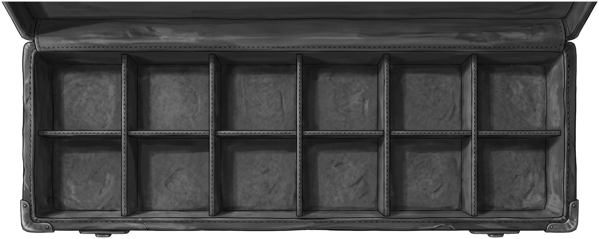

Click or tap the floor and Matt walks there, around the furniture. His size follows each room's depth; furniture in front of him hides him; his shadow falls away from the light, only on bare floor. Click a door or the end of a street to walk through to the next room.

Rent Day
Doyers Street · Thursday, 20 November 1930